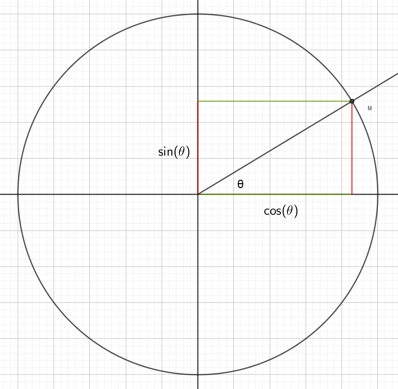
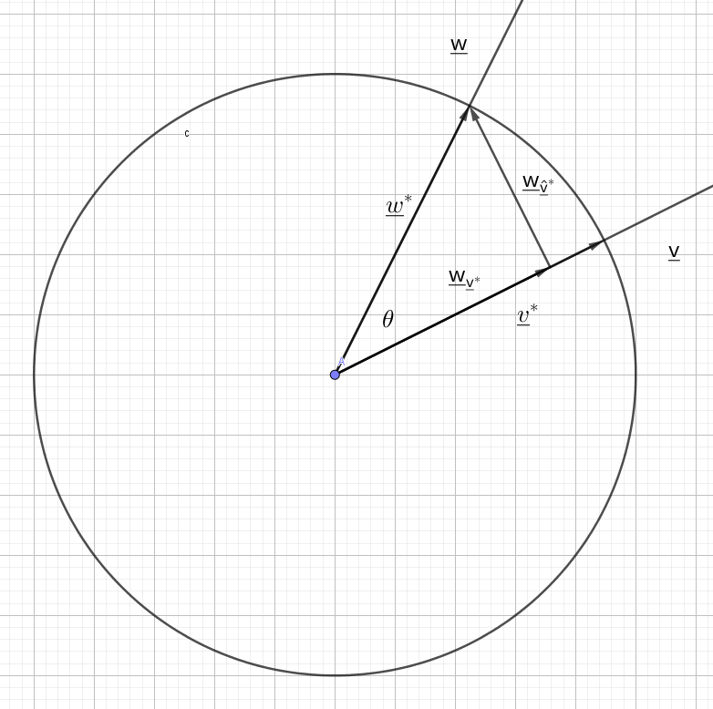

This section is aimed at students in upper secondary education in the Danish
school system, some objects will be simplified and some details omitted.
Coordinates and Magnitude
A vector \(\underline{v}\) is an object that has a magnitude, denoted by
\(|\underline{v}|\) and a direction which can be represented in several ways.
You can denote it by its angle with the x-axis, \(\theta\), or you could denote
it by specifying it's coordinates, in the current setting we will restrict
ourselves to two dimensons denoted by x and y, as such
$$\underline{v}=\begin{pmatrix}v_1\\v_2\v_3\end{pmatrix}$$
which means that the vector spans \(v_1\) units horizontally and \(v_2\) units
vertically. The magnitude of the vector can be determined by these coordinates
by applying the Pythagorean theorem as such
$$|\underline{v}|=\sqrt{v_1^2+v_2^2+v_3^2}$$
Consider the following vector
$$\underline{v}=\begin{pmatrix}=3\\-4\\12\end{pmatrix}$$
Its length can be calculated as follows
$$|\underline{v}|=\sqrt{3^2+(-4)^2+(12)^2}=\sqrt{9+16+144}=\sqrt{269}=13$$
Sum and Multiplication by a Scalar
You can add two vectors by extending one by the other, and then the sum of the
two vectors is the vector that goes from the start of the first vector to the
end of the second. This can also be calculated algebraically as such
$$\underline{v}+\underline{w}=\begin{pmatrix}v_1+w_1\\v_2+w_2\\v_3+w_3\end{pmatrix}$$
You can also subtract vectors and this is just defined as such
\(\underline{v}-\underline{w}=\underline{v}+(-\underline{w})\) where
\(-\underline{w}\) is the vector that has the same magnitude as
\(\underline{w}\) but the opposite direction. These two processes will produce
the diagonals of the parallelogram spanned by the two vectors, the sum will be
the diagonal that goes from the start to the far end, while the two differences
correspond to the the other diagonal as seen in the following image.
If you want to scale a vector by a factor k, this just changes the magnitude and
is represented algebraically as
$$k\underline{v}=\begin{pmatrix}kv_1\\kv_2\\kv_3\end{pmatrix}$$
If \(k < 0\) this represents flipping the vector and specifically \(k=-1\) is the
opposite vector.
Lets continue with the vector from example 1
$$\underline{v}=\begin{pmatrix}3\\-4\\12\end{pmatrix}$$
and add and subtract the following vector
$$\underline{w}=\begin{pmatrix}-3\\-4\\12\end{pmatrix}$$
Then we get
$$\underline{v}±\underline{w}=\begin{pmatrix}3\\-4\\12\end{pmatrix}\pm\begin{pmatrix}-3\\-4\\12\end{pmatrix}
=\begin{pmatrix}3\mp3\\-4\pm4\\12\pm12\end{pmatrix}=\begin{pmatrix}0\\-8\\24\end{pmatrix}\vee\begin{pmatrix}6\\0\\0\end{pmatrix}$$
Since these two vectors are symmetric about the x-axis, the sum diagonal
will obviously lay on the x-axis, and the difference diagonal will
lay parallel to the y-axis as observed. If we multiply one of them by -1
and the other by 2 we get
$$(-1)⋅\underline{v}+2\underline{w}={-4\choose3}+{8\choose 6}={4\choose9}$$
If I hadn't multiplied the second vector by 2, they would still have been
symmetric, about the y-axis, but that 2 moved the diagonal off the axis.
Scalar Product, Determinant and CO-vectors
We have two useful methods to "multiply" two 3D vectors with each other. One is
the so-called scalar product
$$\underline{v}\bullet\underline{w}=\begin{matrix}{v_1w_1}\\+v_2w_2\\+v_3w_3\end{matrix}$$
and the other is the cross-product
$$\underline{v}\times\underline{w}=\begin{vmatrix}1 & v_1 & w_1\\1&v_2 & w_2\\1&v_3&w_3\end{vmatrix}=\begin{pmatrix}v_2w_3-v_3w_2\\v_3w_1-v_1w_3\\v_1w_2-v_2w_1\end{pmatrix}$$
It turns out that the cross-product is orthogonal to both of the other vectors. This
means that if I take the cross-product again, I will get a vector that is orthogonal to that vector in their common plane.
$$\hat{\underline{v}}=(\underline{v}\times\underline{w})\times\underline{v}$$
have a 2D vector, i.e. one where I ignore the z-value, or the value is 0,
then I have a canonical-orthogonal(CO) vector
$$\hat{\underline{v}}=\underline{e}_3\times\underline{v}=\begin{pmatrix}-v_2\\v_1\end{pmatrix}$$
Lets continue with the vectors from the previous examples
$$\underline{v}=\begin{pmatrix}3\\-4\\12\end{align}\begin{pmatrix}-3\\-4\\12\end{align}$$
Then their scalar product is
$$\underline{v}\bullet\underline{w}=3\cdot(-3)+(-4)^2+12^2=-9+16+144=151$$
and the determinant is
$$\underline{v}\times\underline{w}=\begin{pmatrix}-4\cdot12-(-4)\cdot12\\12\cdot(-3)-12\cdot3\\3\cdot(-4)-(-3)\cdot(-4)\end{align}
=\begin{pmatrix}0\\-72\\-24\end{align}=-24\begin{pmatrix}0\\1\\3\end{align}$$
Vectors satisfy most of the rules that apply to scalars, such as
commutativity, associativity and distributativity. Both with respect to the sum,
scalar-multiple and scalar-product. The determinant however, is anti-commutative.
Projections and Vector Division
It is not exactly clear how one would be able to divide vectors, and this is not
a widely recognized operation, but you can define what I will call the
scalar-division as
$$\frac{\underline{v}}{\underline{w}}=
\frac{\underline{v}\bullet\underline{w}}{|\underline{w}|^2}$$
This operation is very useful in conjunction with the concept of vector
projections. We can write what I will call \(\underline{v}\)'s decomposition
by \(\underline{w}\) as
$$\underline{v}=\frac{\underline{v}}{\underline{w}}\underline{w}+
\frac{\underline{v}}{\hat{\underline{w}}}\hat{\underline{w}}=
\underline{v}_{\underline{w}}+\underline{v}_{\hat{\underline{w}}}$$
where we write \(\underline{v}\) as the sum of two vectors, one of which is
parallel with \(\underline{w}\) and one that's orthogonal to it. These two
vectors are then called the projectons of \(\underline{v}\) onto
\(\underline{w}\) and its CO-vector and it's denoted by the notation on the
rightmost side.
If we take the vector decomposition and take its product by the decomposing
vector, I get
\begin{align}
\underline{v}\bullet\underline{w}=&\frac{\underline{v}}{\underline{w}}\underline{w}
\bullet\underline{w}+\cancel{\frac{\underline{v}}{\hat{\underline{w}}}\hat{\underline{w}}
\bullet\underline{w}}\\
=&\frac{\underline{v}\bullet\underline{w}}{\cancel{|\underline{w}|^2}}\cancel{
|\underline{w}|^2}
\end{align}
and if I do the same thing with the vector itself I get
\begin{align}
|\underline{v}|^2=\underline{v}\bullet\underline{v}=&\frac{\underline{v}
}{\underline{w}}\underline{v}
\bullet\underline{w}+\frac{\underline{v}}{\hat{\underline{w}}}\underline{v}\bullet
\hat{\underline{w}}\\
=&\frac{|\underline{v}\bullet\underline{w}|^2}{|\underline{w}|^2}+\frac{
|\underline{v}\bullet\hat{\underline{w}}|^2}{|\hat{\underline{w}}|^2}\\
=&\frac{|\underline{v}|^2\cancel{|\underline{w}|^2(\cos^2(\theta)+\sin^2
(\theta))}}{\cancel{|\underline{w}|^2}}
\end{align}
by the following theorem. I don't know if I'm making something very simple
overly complicated, but this seems like a very beautiful construction.
Lets continue with the vectors from the previous examples
$$\underline{v}={4\choose-3},\underline{w}={4\choose3}$$
Then the scalar divisions of \(\underline{v}\) with \(\underline{w}\) is
$$\frac{\underline{v}}{\underline{w}}=\frac{\underline{v}\bullet\underline{w}
}{|\underline{w}|^2}=\frac{7}{25}$$
and with the CO-vector is
$$\frac{\underline{v}}{\hat{\underline{w}}}=\frac{\underline{v}\bullet
\hat{\underline{w}}}{|\hat{\underline{w}}|^2}=\frac{-\det(\underline{v},
\underline{w})}{|\hat{\underline{w}}|^2}=\frac{-24}{25}$$
This yields the following decomposition of \(\underline{v}\) into its projection
onto the other vector and it's CO-vector
\begin{align}
\underline{v}=&\frac{\underline{v}}{\underline{w}}\underline{w}+
\frac{\underline{v}}{\hat{\underline{w}}}\hat{\underline{w}}\\
=&\frac{7}{25}{4\choose3}-\frac{24}{25}{-3\choose4}\\
=&\frac{1}{25}{28+72\choose21-96}\\
=&\frac{1}{25}{100\choose-75}={4\choose-3}=\underline{v}
\end{align}
I've just added them up to show that they are actually equal to the original
vector.
Before we can state our main result, we need to define the unit circle and
associated objects. The unit circle is a circle with radius 1 about the origin.
If we consider a vector \(\underline{v}\) and extend the vector so that it
intersects the unit circle, we define the cosine of its angle \(\theta\) as the
x-coordinate of the intersection point, similarly we define sine as the
y-coordinate. Referring to the following image, the length of the green line
represents the cosine of the angle and the length of the red line represents
the sine.

At this point we are ready to state and prove what I call the fundamental
theorem of vector geometry.
The Fundamental Theorem of Vector Geometry.
For two vectors \(\underline{v}\) and \(\underline{w}\) we have:
\begin{align}
\text{1. }&&\underline{v}\bullet\underline{w}&=|\underline{v}||\underline{w}
|\cos(\theta)\\
\text{2. }&&\det(\underline{v},\underline{w})&=|\underline{v}|
|\underline{w}|\sin(\theta)=\pm A\\
\text{3. }&&\underline{v}_{\underline{w}}&=\frac{\underline{v}\bullet
\underline{w}}{|\underline{w}|^2}\underline{w}=
\frac{|\underline{v}|}{|\underline{w}|}\cos(\theta)\underline{w}\\
\text{4. }&&\underline{v}_{\hat{\underline{w}}}&=
\frac{\det(\underline{v},\underline{w})}{|\underline{w}|^2}
\hat{\underline{w}}=\frac{|\underline{v}|}{|\underline{w}|}\sin(\theta)
\hat{\underline{w}}
\end{align}
Where \(\theta\) is the angle between the vectors and \(A\) is the area of
the parallelogram spanned by the two vectors.
Lets continue with the vectors from the previous examples
$$\underline{v}={4\choose-3},\underline{w}={4\choose3}$$
Then we can calculate the sine and cosine of the angle between them by using
the first formula
$$\cos(\theta)=\frac{\underline{v}\bullet\underline{w}}{|\underline{v}|
|\underline{w}|}=\frac{7}{5^2}$$
and the second
$$\sin(\theta)=\frac{\det(\underline{v},\underline{w})}{|\underline{v}|
|\underline{w}|}=\frac{24}{5^2}$$
This means we can calculate the angle by isolating \(\theta\)
$$\theta=\arccos\left(\frac{7}{25}\right)=\arcsin\left(\frac{24}{25}\right)
\approx74^\circ$$
Proof.
First we take our two vectors and scale them down to unit vectors so they fit
into the unit circle, such that
$$\underline{v}^*=\frac{\underline{v}}{|\underline{v}|}\text{ and }
\underline{w}^*=\frac{\underline{w}}{|\underline{w}|}$$

Then if we tilt our head to the left, we can immediately observe from the image
that
$$\underline{w}^*=\cos(\theta)\underline{v}^*+\sin(\theta)\hat{\underline{v}}^*$$
this will be key to proving the statements in the theorem.
1. First we consider the scalar product:
\begin{align}
\underline{v}\bullet\underline{w}&=|\underline{v}|\underline{v}^*\bullet|
\underline{w}|\underline{w}^*\\
&=|\underline{v}||\underline{w}|\underline{v}^*\bullet(\cos(\theta)
\underline{v}^*+\cancel{\sin(\theta)\hat{\underline{v}}^*})\\
&=|\underline{v}||\underline{w}|\cos(\theta)\cancel{|\underline{v}^*|^2}
\end{align}
since the scalar product between orthogonal vectors is 0 and the * vectors are unit
vectors.
2. Now we can find the determinant by taking the scalar product with the CO-vector:
\begin{align}
\det(\underline{v},\underline{w})&=\hat{\underline{v}}\bullet\underline{w}=
|\underline{v}|\hat{\underline{v}}^*\bullet|\underline{w}|\underline{w}^*\\
&=|\underline{v}||\underline{w}|\hat{\underline{v}}^*\bullet(\cancel{\cos(\theta)
\underline{v}^*}+\sin(\theta)\hat{\underline{v}}^*)\\
&=|\underline{v}||\underline{w}|\sin(\theta)\cancel{|\hat{\underline{v}}^*|^2}
\end{align}
for the same reasons. To see that this is the same as the area of the parallelogram,
we can start by imagining the parallelogram with sides \(\underline{w}^*\) and
\(\underline{v}\). This obviously has area \(A^*=h\cdot b=|\sin(\theta)||
\underline{v}|\), now we can scale up to the full parallelogram by multiplying by
\(|\underline{w}|\) to yield
$$A=A^*\cdot|\underline{w}|=|\sin(\theta)||\underline{v}||\underline{w}|=|\det(
\underline{v},\underline{w})|$$
3 - 4. Now we take the key formula and multiply both sides by \(|\underline{w}|\)
and expand the right hand side by \(|\underline{v}|^2\) to yield
\begin{align}
&&|\underline{w}|\underline{w}^*&=\frac{|\underline{v}||\underline{w}|\cos(
\theta)}{|\underline{w}|^2}|\underline{v}|\underline{v}^*+
\frac{|\underline{v}||\underline{w}|\sin(\theta)}{|\underline{w}|^2}|
\underline{v}|\hat{\underline{v}}^*\\
\iff&&\underline{w} &=\frac{\underline{v}\bullet\underline{w}}{|\underline{v}|^2}
\underline{v}+\frac{\det(\underline{v},\underline{w})}{|\underline{v}|^2}
\hat{\underline{v}}
\end{align}
∎